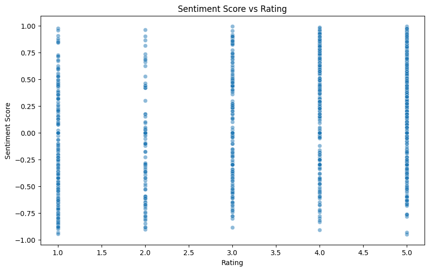

import pandas as pdimport numpy as npimport matplotlib.pyplot as pltimport seaborn as snsfrom nltk.sentiment import SentimentIntensityAnalyzerfrom wordcloud import WordCloudfrom sklearn.feature_extraction.text import CountVectorizerimport refrom datetime import datetime, timedelta# Load the datadf = pd.read_csv('karcher_reviews.csv')# Display the first few rows and basic informationprint(df.head())print(df.info())
text rating author \
0 Very easy to look up and order parts order par... 5 Ed3000
1 Fast shipping and arrived with no damages. Hig... 5 David
2 Excellent service! I was notified every step o... 5 Dave244
3 Prompt shipping and well packed. Had no broken... 5 Axel
4 Very good shopping experience. Love the new Ka... 5 BikeMike
date
0 a day ago
1 2 days ago
2 2 days ago
3 4 days ago
4 4 days ago
<class 'pandas.core.frame.DataFrame'>
RangeIndex: 3243 entries, 0 to 3242
Data columns (total 4 columns):
# Column Non-Null Count Dtype
--- ------ -------------- -----
0 text 3243 non-null object
1 rating 3243 non-null int64
2 author 3233 non-null object
3 date 3243 non-null object
dtypes: int64(1), object(3)
memory usage: 101.5+ KB
None
# Function to convert relative date to actual datedef convert_relative_date(date_str, reference_date):if'day ago'in date_str or'days ago'in date_str: days =1if date_str =='a day ago'elseint(re.search(r'\d+', date_str).group())return reference_date - timedelta(days=days)elif'month ago'in date_str or'months ago'in date_str: months =1if date_str =='a month ago'elseint(re.search(r'\d+', date_str).group())return reference_date - pd.DateOffset(months=months)elif'year ago'in date_str or'years ago'in date_str: years =1if date_str =='a year ago'elseint(re.search(r'\d+', date_str).group())return reference_date - pd.DateOffset(years=years)else:return pd.to_datetime(date_str) # For any dates already in a standard format# Load the datadf = pd.read_csv('karcher_reviews.csv')# Set the reference date (today's date in the context)reference_date = datetime(2024, 6, 29)# Create new date columndf['actual_date'] = df['date'].apply(lambda x: convert_relative_date(x, reference_date))# Display the first few rows to verifyprint(df[['date', 'actual_date']].head())# Basic statistics about the date rangeprint(f"Date range: {df['actual_date'].min()} to {df['actual_date'].max()}")
date actual_date
0 a day ago 2024-06-28
1 2 days ago 2024-06-27
2 2 days ago 2024-06-27
3 4 days ago 2024-06-25
4 4 days ago 2024-06-25
Date range: 2019-06-29 00:00:00 to 2024-06-28 00:00:00
Average rating: 4.360468701819303
Number of reviews: 3243
Date range: 2019-06-29 00:00:00 to 2024-06-28 00:00:00
# Initialize sentiment analyzersia = SentimentIntensityAnalyzer()# Function to get sentiment scoresdef get_sentiment(text):return sia.polarity_scores(text)['compound']# Apply sentiment analysisdf['sentiment'] = df['text'].apply(get_sentiment)# Plot sentiment vs ratingplt.figure(figsize=(10, 6))sns.scatterplot(x='rating', y='sentiment', data=df, alpha=0.5)plt.title('Sentiment Score vs Rating')plt.xlabel('Rating')plt.ylabel('Sentiment Score')plt.show()

# Function to clean textdef clean_text(text): text = re.sub(r'[^\w\s]', '', str(text).lower())return text# Clean the textdf['clean_text'] = df['text'].apply(clean_text)# Create word cloudall_words =' '.join(df['clean_text'])wordcloud = WordCloud(width=800, height=500, random_state=21, max_font_size=110).generate(all_words)plt.figure(figsize=(10, 7))plt.imshow(wordcloud, interpolation="bilinear")plt.axis('off')plt.title('Most Common Words in Reviews')plt.show()# Get most common wordsvectorizer = CountVectorizer(stop_words='english')word_count = vectorizer.fit_transform(df['clean_text'])words = pd.DataFrame(word_count.sum(axis=0).T, columns=['count'])words.index = vectorizer.get_feature_names_out()top_words = words.sort_values('count', ascending=False).head(20)plt.figure(figsize=(12, 6))sns.barplot(x=top_words.index, y='count', data=top_words)plt.title('Top 20 Most Common Words')plt.xticks(rotation=45, ha='right')plt.tight_layout()plt.show()
# Resample by month and calculate average rating and sentimentmonthly_data = df.set_index('actual_date').resample('M').agg({'rating': 'mean', 'sentiment': 'mean'})# Plot trendsfig, ax1 = plt.subplots(figsize=(12, 6))ax1.set_xlabel('Date')ax1.set_ylabel('Average Rating', color='tab:blue')ax1.plot(monthly_data.index, monthly_data['rating'], color='tab:blue')ax1.tick_params(axis='y', labelcolor='tab:blue')ax2 = ax1.twinx()ax2.set_ylabel('Average Sentiment', color='tab:orange')ax2.plot(monthly_data.index, monthly_data['sentiment'], color='tab:orange')ax2.tick_params(axis='y', labelcolor='tab:orange')plt.title('Trends in Average Rating and Sentiment Over Time')fig.tight_layout()plt.show()
/var/folders/5q/f40382gn3lxgmyf4m7grw_080000gp/T/ipykernel_17263/1836252466.py:2: FutureWarning: 'M' is deprecated and will be removed in a future version, please use 'ME' instead.
monthly_data = df.set_index('actual_date').resample('M').agg({'rating': 'mean', 'sentiment': 'mean'})